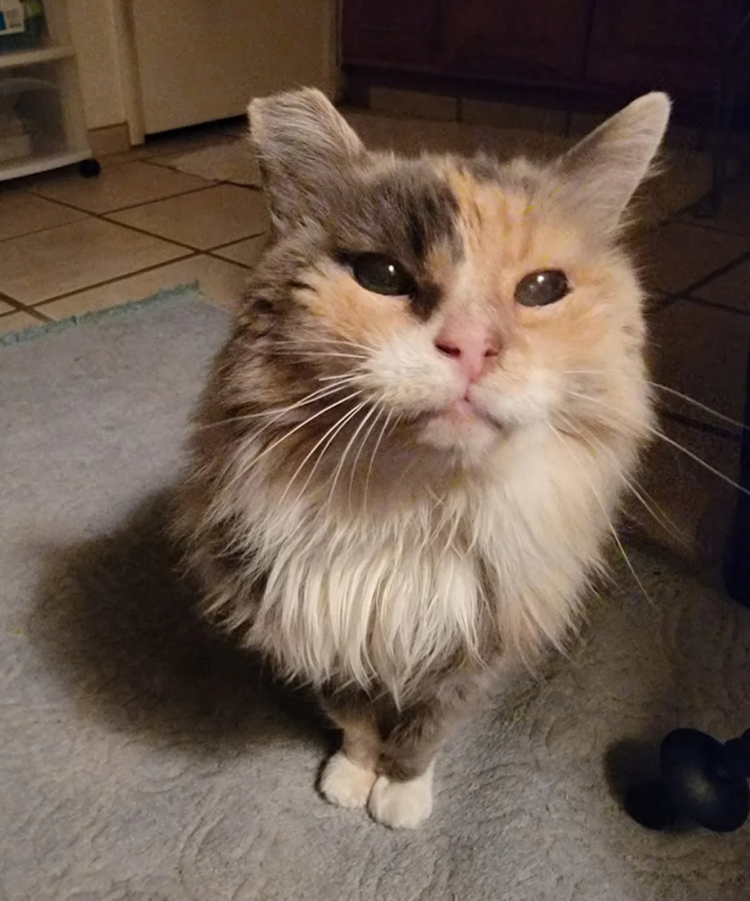

Home / Stories
From the sanctuary
Stories & news from the animals we've saved.
Rescues, recoveries, and the everyday moments that make this place what it is — written by the volunteers who are there for it.

Rescues, recoveries, and the everyday moments that make this place what it is — written by the volunteers who are there for it.